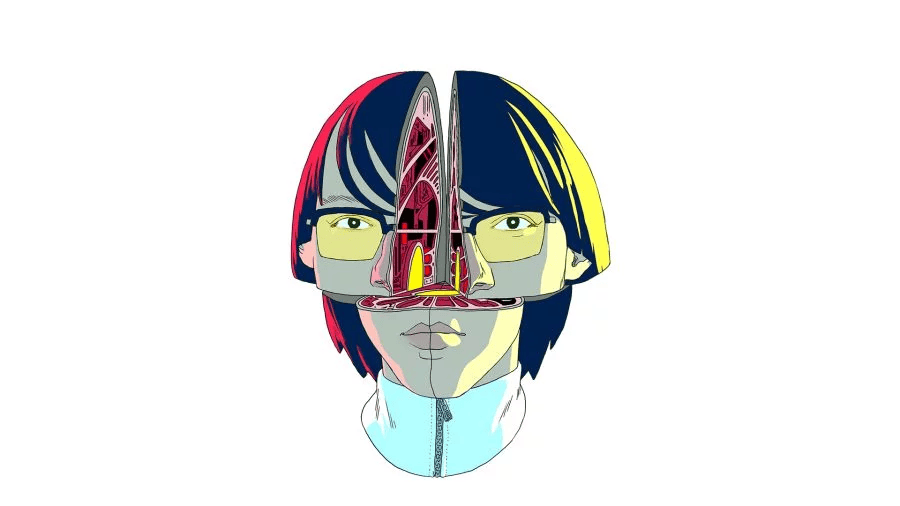

Théo Battut
Développeur Web Freelance & Junior
Développeur web passionné, j’accompagne les entreprises et les entrepreneurs dans la création de sites web modernes et performants. Spécialisé en PHP/Symfony, HTML, CSS et JavaScript, je conçois des solutions sur mesure : sites vitrines, e-commerce, plateformes corporate et projets événementiels. Je suis également ouvert à des opportunités professionnelles pour mettre mes compétences au service d’équipes innovantes.
Compétences
HTML
CSS
JavaScript
PHP
Symfony
Figma
Bootstrap
SEO
Mon dernier projet
Développement d’une plateforme web complète pour la gestion et la promotion d’événements musicaux. Ce projet met en œuvre Symfony, PHP et une interface responsive optimisée pour l’expérience utilisateur.
